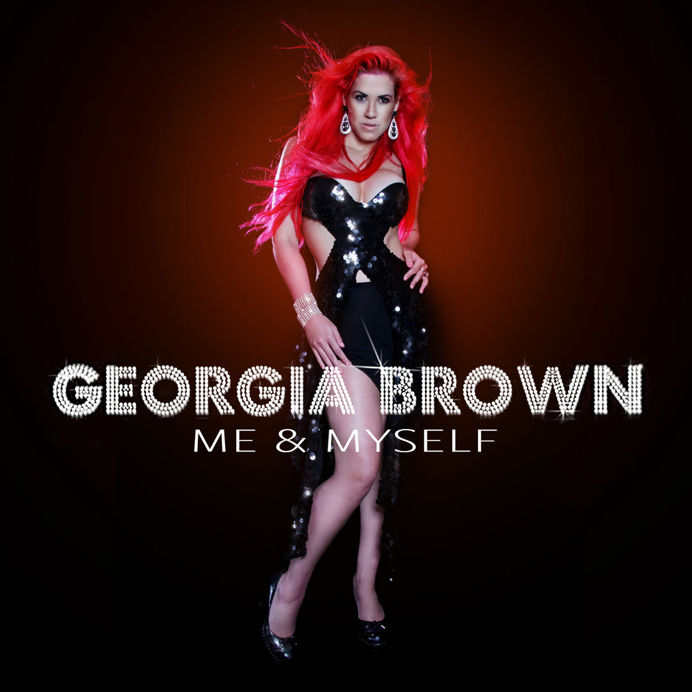

Se llama "You Suffer" de la banda Napalm Death. Dura exactamente 1,316 segundos y consta de un solo acorde ultra rápido.
"ORGAN²/ASLSP" de John Cage se está interpretando en una iglesia en Alemania. Comenzó en 2001 y terminará en el año 2640.
Alcanzado por Georgia Brown. Logró cantar una nota G10 (25,086 Hz), una frecuencia imperceptible para el oído humano común.

Tim Storms ostenta el récord Guinness produciendo una nota de 0.189 Hz (G-7), audible prácticamente solo para paquidermos.